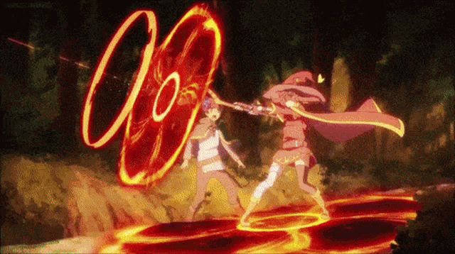
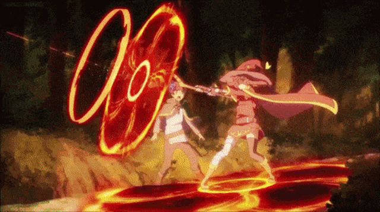
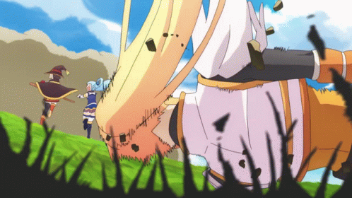
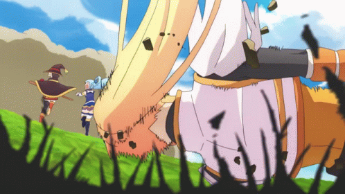
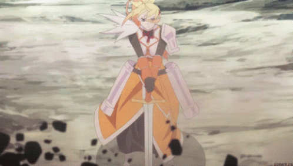
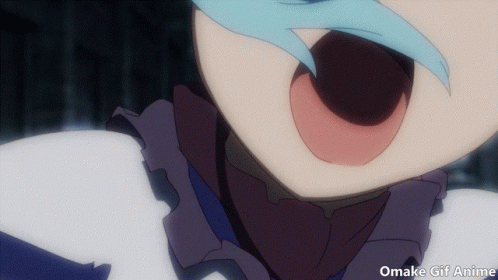
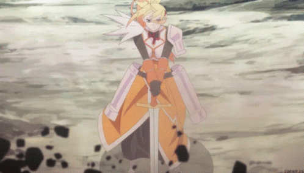
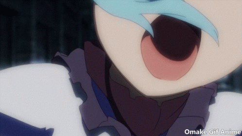
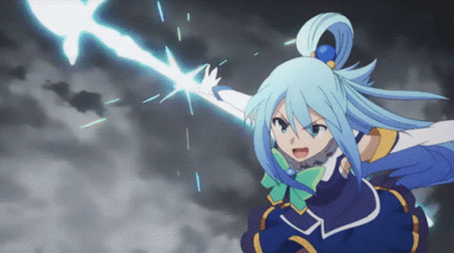
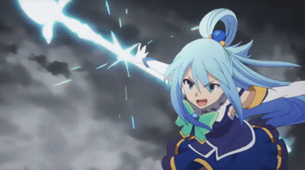

Kono Subarashii Sekai ni Shukufuku wo!
Konosuba é a adaptação em anime de uma novel do mesmo nome criada por Natsume Akatsuki e Kurone Mishima. Konosuba é um anime de comédia muito popular dentre os fãs do gênero. Ele possui duas temporadas, dois OVAs, um filme e um spin-off. Konosuba já passou pela mão de três estúdios, estúdio Deen (higurashi, samurai x, sakura trick, sasaki to miyano, urusei yatsura, itou junji), J.C.staff (Toradora, one punch man 2, shokugeki no souma, danmachi) e estúdio Drive(fumetsu no anata, uzumaki, fate/grand order, teppen).
A primeira temporada do anime foi lançada no dia 14 de janeiro de 2016. Konosuba é um anime de comédia,aventua e fantasia, além de ser um isekai( uma obra onde o protagonista viaja para outro mundo, dimensão,etc). Sua classificação indiicativa é para maiores de 16 anos.
O anime é muito bem avaliado, possuido notas altas em quase todas as temporadas.
konosuba 1st season- 8.11
konosuba 1st OVA- 7.84
konosuba 2nd season- 8.27
konosuba 2nd OVA- 8.03
film- 8.45
spin-off prequel- 7.55
Sinopse
Depois de ter uma morte ridícula e patética ao voltar da compra de um jogo, o estudante do ensino médio e recluso Kazuma Satou se vê sentado diante de uma deusa bonita, mas desagradável, chamada Aqua. Ela oferece ao NEET duas opções: continuar para o céu ou reencarnar no sonho de todo jogador - um verdadeiro mundo de fantasia! Escolhendo começar uma nova vida, Kazuma é rapidamente encarregado de derrotar um Rei Demônio que está aterrorizando aldeias. Mas antes de ir, ele pode escolher um item de qualquer tipo para ajudá-lo em sua busca, e o futuro herói seleciona Aqua. Mas Kazuma cometeu um grave erro - Aqua é completamente inútil!
Infelizmente, seus problemas não terminam aqui; acontece que viver em um mundo assim é muito diferente de como se desenrola em um jogo. Em vez de embarcar em uma aventura emocionante, a dupla deve primeiro trabalhar para pagar suas despesas. Na verdade, seus infortúnios apenas começaram!
A história segue Kazuma Satou, um jovem gamer que morre de forma patética e é ressuscitado em um mundo de fantasia com a oportunidade de levar consigo um item especial. Ele escolhe levar consigo a deusa Aqua, uma divindade inútil que se torna uma parceira inesperada para suas aventuras.
Juntos, Kazuma e Aqua se juntam a outros membros do grupo, incluindo Megumin, uma poderosa maga carmesim especializada em magia explosiva, e Darkness, uma cavaleira masoquista. O grupo forma uma equipe disfuncional, mas hilária, enquanto embarcam em missões para derrotar monstros e salvar o mundo, enfrentando desafios e situações cômicas ao longo do caminho.
o principal elemento de konosuba é a comedia, dando ênfase nas personalidades excêntricas dos personagens e nas interações entre eles. Além disso, o anime também possui um humor baseado na quebra de expectativa do protagonista, Kazuma Satou, com um mundo isekai estilo RPG.
A trilha sonora de Konosuba é maravilhosa, sendo um dos maiores destaques da série e conseguindo transmitir toda a emoção da cena. Suas openings são cativantes, o que deixa a trilha sonora desse anime ainda mais marcante.
Um belo exemplo do quão a trilha sonora desse anime é maravilhosa e consegue trabalhar perfeitamente com as cenas é a música tema da megumin que é, talvez, a mais notável, pois está presente em todos os momentos em que a personagem utiliza sua magia explosiva( que provavelmente são as cenas mais memoráveis da série ).
Assim como sua Soundtrack, a animação de Kononsuba é maravilhosamente acima da média, possuindo uma boa sakuga durante toda a série. O estúdio que animou a primeira e segunda temporada de Konosuba foi o estúdio Deen, que não possui uma boa fama, já que seus animes normalmente possuem uma baixa qualidade de animação. Mas com Konosuba foi diferente, pois sua animação é impecável.
Konosuba possui um traço simples, mas agradável. Além disso, a animação é pouco consistente, mas isso não é problema já que deixa as cenas ainda mais cômicas.
A alta qualidade de animação pode ser notada em diversos momentos da série, mas, provavelmente, os mais memoráveis são os momentos em que a megumin utiliza sua magia explosiva.
Alguns desses momentos:


 



No entanto, não é apenas essas cenas que possuem uma boa animação. Em outros momentos da série também há um aumento na qualidade de animação, tais como, por exemplo, o conflito contra um dos generais do exército do rei demônio no episódio 5 e 6, durante a tentativa do grupo de parar a fortaleza destroyer no final da primeira temporada e na luta contra o slime glutão no final da segunda temporada.
outros momentos bem animados:
 

 



 


Filme...
O filme de Konosuba é maravilhoso e hilário, assim como o anime. No entanto, o estúdio de animação muda. A J.C staff, que produziu diversos animes famosos, anima esse filme.
Normalmente se espera que uma mudança de estúdio de um anime onde a animação e designer são alguns dos elementos mais elogiados seja fatal, assim como foi com animes como One punch man, Shingeki no Kyojin, Higurashi no Naku Koro ni e high school DxD. Mas, para grande surpresa do público, a animação do filme ficou tão boa quando a do anime, sem muita mudança no design dos personagens.
A animação desse filme é maravilhosa. Por ser um filme, a qualidade de animação é superior a da série principal. Assim sendo, os momentos sakuga desse filme são extraordinariamente bem animados. Inclusive, esse filme possui o maior pico de animação do anime.
Além da animação maravilhosa, esse filme também possui uma trilha sonora de qualidade, assim como a série, conseguindo passar toda a emocão do momento.
O filme de Konosuba não é uma história paralela, mas sim algo canônico que se passa entre a segunda e terceira temporada do anime. Portanto não se deve ser pulado.
spin-off...
O spin-off de Konosuba é uma história prequel que foca em desenvolver o passado de Megumin, uma das personagens principais da série. No entanto, assim como o filme, o estúdio de animação muda mais uma vez, agora passando a ser o estúdio Drive.
Mesmo com a mudança de estúdio, o spin-off de Konosuba possui uma boa animação e um design idêntico a dos demais títulos da série. A animação é notavelmente diferente, mas, mesmo com a diferença com a série principal, não deixa de ser boa.
A trilha sonora novamente é impecável, talvez sendo a melhor até agora.